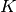
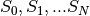
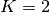
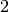

Appendix A. Finite element method list¶

Let us recall that all finite element methods defined in GetFEM++ are declared in the file getfem_fem.h and that a descriptor on a finite element method is obtained thanks to the function:
getfem::pfem pf = getfem::fem_descriptor("name of method");
where "name of method" is a string to be choosen among the existing methods.
Classical  Lagrange elements on simplices¶
Lagrange elements on simplices¶
It is possible to define a classical Lagrange element of arbitrary
dimension and arbitrary degree. Each degree of freedom of such an element
corresponds to the value of the function on a corresponding node. The grid of
node is the so-called Lagrange grid. Figures Examples of classical Lagrange elements on a segment.

The number of degrees of freedom for a classical Lagrange element of
dimension and degree  is . For
instance, in dimension 2 , this value is and in dimension 3 , it is .
The particular way used in GetFEM++ to numerate the nodes are also shown in figures segment, triangle and tetrahedron. Using another numeration, let
be somme indices such that
Then, the coordinate of a node can be computed as
where  are the vertices of the simplex (for the particular choice has been chosen). Then each base function, corresponding of each node is defined by
where are the barycentric coordinates, i.e. the polynomials of
degree 1 whose value is  on the vertex and whose value is
on other vertices. On the reference element, one has
on the vertex and whose value is
on other vertices. On the reference element, one has
When between two elements of the same degrees (even with different dimensions), the d.o.f. of a common face are linked, the element is of class . This means that the global polynomial is continuous. If you try to link elements of different degrees, you will get some trouble with the unlinked d.o.f. This is not automatically supported by GetFEM++, so you will have to support it (add constraints on these d.o.f.).
For some applications (computation of a gradient for instance) one may not want
the d.o.f. of a common face to be linked. This is why there are two versions of
the classical Lagrange element.
Classical degree dimension d.o.f. number class vector -equivalent
Polynomial , , No Yes Yes

Discontinuous degree dimension d.o.f. number class vector Polynomial , , discontinuous No Yes Yes
Even though Lagrange elements are defined for arbitrary degrees, to choose a high degree can be problematic for a large number of applications due to the “noisy” caracteristic of the lagrange basis. These elements are recommended for the basic interpolation but for p.d.e. applications elements with hierarchical basis are preferable (see the corresponding section).
Classical Lagrange elements on other geometries¶
Classical Lagrange elements on parallelepipeds or prisms are obtained as tensor
product of Lagrange elements on simplices. When two elements are defined, one on a
dimension  and the other in dimension , one obtains the base
functions of the tensorial product (on the reference element) as
and the other in dimension , one obtains the base
functions of the tensorial product (on the reference element) as
where and are respectively the base functions of the first and second element.
The  element on a parallelepiped of dimension is obtained as
the tensorial product of classical elements on the segment.
Examples in dimension 2 are shown in figure dimension 2
and in dimension 3 in figure dimension 3.
element on a parallelepiped of dimension is obtained as
the tensorial product of classical elements on the segment.
Examples in dimension 2 are shown in figure dimension 2
and in dimension 3 in figure dimension 3.
A prism in dimension is the direct product of a simplex of dimension
with a segment. The element on this prism is
the tensorial product of the classical element on a simplex of
dimension with the classical element on a segment. For
 this coincide with a parallelepiped. Examples in dimension
this coincide with a parallelepiped. Examples in dimension  are shown in figure dimension 3. This is also possible
not to have the same degree on each dimension. An example is shown on figure
dimension 3, prism.
are shown in figure dimension 3. This is also possible
not to have the same degree on each dimension. An example is shown on figure
dimension 3, prism.

Lagrange element on a prism, 12 d.o.f.,
. degree dimension d.o.f. number class vector Polynomial , , No Yes Yes
. Lagrange element on prisms "FEM_PK_PRISM(P, K)" degree dimension d.o.f. number class vector Polynomial , , No Yes Yes
. Lagrange element on prisms "FEM_PRODUCT(FEM_PK(P-1, K1), FEM_PK(1, K2))" degree dimension d.o.f. number class vector Polynomial , , No Yes Yes
Incomplete Lagrange element on parallelepipeds (Quad 8 and Hexa 20 serendipity elements) "FEM_Q2_INCOMPLETE(P)"
degree dimension d.o.f. number class vector Polynomial 3 , No Yes Yes

Elements with hierarchical basis¶
The idea behind hierarchical basis is the description of the solution at different level: a rough level, a more refined level ... In the same discretization some degrees of freedom represent the rough description, some other the more rafined and so on. This corresponds to imbricated spaces of discretization. The hierarchical basis contains a basis of each of these spaces (this is not the case in classical Lagrange elements when the mesh is refined).
Among the advantages, the condition number of rigidity matrices can be greatly improved, it allows local raffinement and a resolution with a multigrid approach.
Hierarchical elements with respect to the degree¶
. Classical Lagrange element on simplices but with a hierarchical basis with respect to the degree "FEM_PK_HIERARCHICAL(P,K)"
degree dimension d.o.f. number class vector Polynomial , , No Yes Yes
. Classical Lagrange element on parallelepipeds but with a hierarchical basis with respect to the degree "FEM_QK_HIERARCHICAL(P,K)" degree dimension d.o.f. number class vector Polynomial , , No Yes Yes
. degree dimension d.o.f. number class vector Polynomial , , No Yes Yes
some particular choices: will be built with the basis of the
 , the additional basis of the
, the additional basis of the  then the additional basis of the .
then the additional basis of the .
will be built with the basis of the , the additional basis
:of the then the additional basis of the (not with the
:basis of the , the additional basis of the then the
:additional basis of the , it is possible to build the latter with
:"FEM_GEN_HIERARCHICAL(a,b)")
Composite elements¶
The principal interest of the composite elements is to build hierarchical elements. But this tool can also be used to build piecewise polynomial elements.
Composition of a finite element method on an element with S subdivisions "FEM_STRUCTURED_COMPOSITE(FEM1, S)" degree dimension d.o.f. number class vector Polynomial degree of FEM1 dimension of FEM1 variable variable No If FEM1 is piecewise
It is important to use a corresponding composite integration method.
Hierarchical composite elements¶
Hierarchical composition of a degree dimension d.o.f. number class vector Polynomial variable No Yes piecewise
Hierarchical composition of a hierarchical degree dimension d.o.f. number class vector Polynomial variable No Yes piecewise
Other constructions are possible thanks to "FEM_GEN_HIERARCHICAL(FEM1, FEM2)" and "FEM_STRUCTURED_COMPOSITE(FEM1, S)".
It is important to use a corresponding composite integration method.
Classical vector elements¶
Raviart-Thomas of lowest order elements¶
Raviart-Thomas of lowest order element on simplices "FEM_RT0(P)" degree dimension d.o.f. number class vector Polynomial H(div) Yes No Yes
Raviart-Thomas of lowest order element on parallelepipeds (quadrilaterals, hexahedrals) "FEM_RT0Q(P)" degree dimension d.o.f. number class vector Polynomial H(div) Yes No Yes

Nedelec (or Whitney) edge elements¶
Nedelec (or Whitney) edge element “FEM_NEDELEC(P)”` degree dimension d.o.f. number class vector Polynomial H(rot) Yes No Yes
Specific elements in dimension 1¶
GaussLobatto element¶
The 1D GaussLobatto element is similar to the classical
fem on the segment, but the nodes are given by the Gauss-Lobatto-Legendre
quadrature rule of order . This FEM is known to lead to better
conditioned linear systems, and can be used with the corresponding quadrature to
perform mass-lumping (on segments or parallelepipeds).
The polynomials coefficients have been pre-computed with Maple (they require the inversion of an ill-conditioned system), hence they are only available for the following values of : . Note that for and , this is the classical and fem.
GaussLobatto degree dimension d.o.f. number class vector Polynomial No Yes Yes
Hermite element¶
Base functions on the reference element
This element is close to be -equivalent but it is not. On the real
element the value of the gradient on vertices will be multiplied by the gradient
of the geometric transformation. The matrix  is not equal to identity but
is still diagonal.
is not equal to identity but
is still diagonal.
Hermite element on the segment "FEM_HERMITE(1)" degree dimension d.o.f. number class vector Polynomial No No Yes
Lagrange element with an additional bubble function¶
Lagrange degree dimension d.o.f. number class vector Polynomial  No Yes Yes
Specific elements in dimension 2¶
Elements with additional bubble functions¶

Lagrange degree dimension d.o.f. number class vector Polynomial or No Yes Yes
Lagrange degree dimension d.o.f. number class vector Polynomial or No Yes Piecewise
Lagrange degree dimension d.o.f. number class vector Polynomial No Yes Yes
Lagrange element on a triangle with additional d.o.f on face 0, 4 d.o.f.,
. degree dimension d.o.f. number class vector Polynomial No Yes Yes
Non-conforming element¶
. degree dimension d.o.f. number class vector Polynomial No Yes Yes
Hermite element¶
Base functions on the reference element:
![\begin{array}{ll}
\widehat{\varphi}_0 = (1-x-y)(1+x+y-2x^2-2y^2-11xy),~~ & (\widehat{\varphi}_0(0,0) = 1), \\
\widehat{\varphi}_1 = x(1-x-y)(1-x-2y), & (\partial_x\widehat{\varphi}_1(0,0) = 1), \\
\widehat{\varphi}_2 = y(1-x-y)(1-2x-y), & (\partial_y\widehat{\varphi}_2(0,0) = 1), \\
\widehat{\varphi}_3 = -2x^3 + 7 x^2y + 7xy^2 + 3x^2 - 7xy, & (\widehat{\varphi}_3(1,0) = 1), \\
\widehat{\varphi}_4 = x^3-2x^2y-2xy^2-x^2+2xy, & (\partial_x\widehat{\varphi}_4(1,0) = 1), \\
\widehat{\varphi}_5 = xy(y+2x-1), & (\partial_y\widehat{\varphi}_5(1,0) = 1), \\
\widehat{\varphi}_6 = 7x^2y + 7xy^2 - 2y^3+3y^2-7xy, & (\widehat{\varphi}_6(0,1) = 1), \\
\widehat{\varphi}_7 = xy(x+2y-1), & (\partial_x\widehat{\varphi}_7(0,1) = 1), \\
\widehat{\varphi}_8 = y^3-2x^2y-2xy^2-y^2+2xy, & (\partial_y\widehat{\varphi}_8(0,1) = 1), \\
\widehat{\varphi}_9 = 27xy(1-x-y), & (\widehat{\varphi}_9(1/3,1/3) = 1), \\
\end{array}](../_images/math/e0bc092807ded98e32cfb9f2dfdb0459a2496156.png)
This element is not -equivalent (The matrix is not equal to
identity). On the real element linear combinations of and
are used to match the gradient on the corresponding vertex.
Idem for the two couples , and
, for the two other vertices.
Hermite element on a triangle "FEM_HERMITE(2)" degree dimension d.o.f. number class vector Polynomial No No Yes
Morley element¶
This element is not -equivalent (The matrix is not equal to
identity). In particular, it can be used for non-conforming discretization of
fourth order problems, despite the fact that it is not .
Morley element on a triangle "FEM_MORLEY" degree dimension d.o.f. number class vector Polynomial discontinuous No No Yes
Argyris element¶

Argyris element, , 21 d.o.f., 
The base functions on the reference element are:
![\begin{array}{ll}
\widehat{\varphi}_{0}(x,y) = 1 - 10x^3 - 10y^3 + 15x^4 - 30x^2y^2 + 15y^4 - 6x^5 + 30x^3y^2 + 30x^2y^3 - 6y^5, & (\widehat{\varphi}_0(0,0) = 1), \\
\widehat{\varphi}_{1}(x,y) = x - 6x^3 - 11xy^2 + 8x^4 + 10x^2y^2 + 18xy^3 - 3x^5 + x^3y^2 - 10x^2y^3 - 8xy^4, & (\partial_x\widehat{\varphi}_1(0,0) = 1),\\
\widehat{\varphi}_{2}(x,y) = y - 11x^2y - 6y^3 + 18x^3y + 10x^2y^2 + 8y^4 - 8x^4y - 10x^3y^2 + x^2y^3 - 3y^5, & (\partial_y\widehat{\varphi}_2(0,0) = 1),\\
\widehat{\varphi}_{3}(x,y) = 0.5x^2 - 1.5x^3 + 1.5x^4 - 1.5x^2y^2 - 0.5x^5 + 1.5x^3y^2 + x^2y^3, & (\partial^2_{xx}\widehat{\varphi}_3(0,0) = 1),\\
\widehat{\varphi}_{4}(x,y) = xy - 4x^2y - 4xy^2 + 5x^3y + 10x^2y^2 + 5xy^3 - 2x^4y - 6x^3y^2 - 6x^2y^3 - 2xy^4, & (\partial^2_{xy}\widehat{\varphi}_{4}(0,0) = 1),\\
\widehat{\varphi}_{5}(x,y) = 0.5y^2 - 1.5y^3 - 1.5x^2y^2 + 1.5y^4 + x^3y^2 + 1.5x^2y^3 - 0.5y^5, & (\partial^2_{yy}\widehat{\varphi}_{5}(0,0) = 1),\\
\widehat{\varphi}_{6}(x,y) = 10x^3 - 15x^4 + 15x^2y^2 + 6x^5 - 15x^3y^2 - 15x^2y^3, & (\widehat{\varphi}_6(1,0) = 1),\\
\widehat{\varphi}_{7}(x,y) = -4x^3 + 7x^4 - 3.5x^2y^2 - 3x^5 + 3.5x^3y^2 + 3.5x^2y^3, & (\partial_x\widehat{\varphi}_7(1,0) = 1),\\
\widehat{\varphi}_{8}(x,y) = -5x^2y + 14x^3y + 18.5x^2y^2 - 8x^4y - 18.5x^3y^2 - 13.5x^2y^3, & (\partial_y\widehat{\varphi}_8(1,0) = 1),\\
\widehat{\varphi}_{9}(x,y) = 0.5x^3 - x^4 + 0.25x^2y^2 + 0.5x^5 - 0.25x^3y^2 - 0.25x^2y^3, & (\partial^2_{xx}\widehat{\varphi}_{9}(1,0) = 1),\\
\widehat{\varphi}_{10}(x,y) = x^2y - 3x^3y - 3.5x^2y^2 + 2x^4y + 3.5x^3y^2 + 2.5x^2y^3, & (\partial^2_{xy}\widehat{\varphi}_{10}(1,0) = 1),\\
\widehat{\varphi}_{11}(x,y) = 1.25x^2y^2 - 0.75x^3y^2 - 1.25x^2y^3, & (\partial^2_{yy}\widehat{\varphi}_{11}(1,0) = 1),\\
\widehat{\varphi}_{12}(x,y) = 10y^3 + 15x^2y^2 - 15y^4 - 15x^3y^2 - 15x^2y^3 + 6y^5, & (\widehat{\varphi}_{12}(0,1) = 1),\\
\widehat{\varphi}_{13}(x,y) = -5xy^2 + 18.5x^2y^2 + 14xy^3 - 13.5x^3y^2 - 18.5x^2y^3 - 8xy^4, & (\partial_x\widehat{\varphi}_{13}(0,1) = 1),\\
\widehat{\varphi}_{14}(x,y) = -4y^3 - 3.5x^2y^2 + 7y^4 + 3.5x^3y^2 + 3.5x^2y^3 - 3y^5, & (\partial_y\widehat{\varphi}_{14}(0,0) = 1),\\
\widehat{\varphi}_{15}(x,y) = 1.25x^2y^2 - 1.25x^3y^2 - 0.75x^2y^3, & (\partial^2_{xx}\widehat{\varphi}_{15}(0,1) = 1),\\
\widehat{\varphi}_{16}(x,y) = xy^2 - 3.5x^2y^2 - 3xy^3 + 2.5x^3y^2 + 3.5x^2y^3 + 2xy^4, & (\partial^2_{xy}\widehat{\varphi}_{16}(0,1) = 1),\\
\widehat{\varphi}_{17}(x,y) = 0.5y^3 + 0.25x^2y^2 - y^4 - 0.25x^3y^2 - 0.25x^2y^3 + 0.5y^5, & (\partial^2_{yy}\widehat{\varphi}_{17}(0,1) = 1),\\
\widehat{\varphi}_{18}(x,y) = \sqrt{2}(-8x^2y^2 + 8x^3y^2 + 8x^2y^3), & ~\hspace{-10.5em}(\sqrt{0.5}(\partial_{x}\widehat{\varphi}_{18}(0.5,0.5) + \partial_{y}\widehat{\varphi}_{18}(0.5,0.5)) = 1),\\
\widehat{\varphi}_{19}(x,y) = -16xy^2 + 32x^2y^2 + 32xy^3 - 16x^3y^2 - 32x^2y^3 - 16xy^4, & (-\partial_{x}\widehat{\varphi}_{19}(0,0.5) = 1),\\
\widehat{\varphi}_{20}(x,y) = -16x^2y + 32x^3y + 32x^2y^2 - 16x^4y - 32x^3y^2 - 16x^2y^3, & (-\partial_{y}\widehat{\varphi}_{20}(0.5,0) = 1),\\
\end{array}](../_images/math/b00c09363b6dae302379187994bb6be8db085e9a.png)
This element is not -equivalent (The matrix is not equal to
identity). On the real element linear combinations of the transformed base
functions are used to match the gradient, the second
derivatives and the normal derivatives on the faces. Note that the use of the
matrix allows to define Argyris element even with nonlinear geometric
transformations (for instance to treat curved boundaries).
Argyris element on a triangle "FEM_ARGYRIS" degree dimension d.o.f. number class vector Polynomial No No Yes
Hsieh-Clough-Tocher element¶
This element is not -equivalent. This is a composite element.
Polynomial of degree 3 on each of the three sub-triangles (see figure
Hsieh-Clough-Tocher (HCT) element, , 12 d.o.f., and [ciarlet1978]). It is strongly advised to use a
"IM_HCT_COMPOSITE" integration method with this finite element. The numeration
of the dof is the following: 0, 3 and 6 for the lagrange dof on the first second
and third vertex respectively; 1, 4, 7 for the derivative with respects to the
first variable; 2, 5, 8 for the derivative with respects to the second variable
and 9, 10, 11 for the normal derivatives on face 0, 1, 2 respectively.
HCT element on a triangle "FEM_HCT_TRIANGLE" degree dimension d.o.f. number class vector Polynomial No No piecewise
This element exists also in its reduced form, where the normal derivatives are assumed to be polynomial of degree one on each edge (see figure Reduced Hsieh-Clough-Tocher (reduced HCT) element, , 9 d.o.f., )
Reduced HCT element on a triangle "FEM_REDUCED_HCT_TRIANGLE" degree dimension d.o.f. number class vector Polynomial No No piecewise
A composite element on quadrilaterals¶
This element is not -equivalent. This is a composite element.
Polynomial of degree 3 on each of the four sub-triangles (see figure
Composite element on quadrilaterals, piecewise , 16 d.o.f., ). At least on the reference element it corresponds to the
Fraeijs de Veubeke-Sander element (see [ciarlet1978]). It is strongly advised
to use a "IM_QUADC1_COMPOSITE" integration method with this finite element.
. degree dimension d.o.f. number class vector Polynomial No No piecewise
This element exists also in its reduced form, where the normal derivatives are assumed to be polynomial of degree one on each edge (see figure Reduced composite element on quadrilaterals, piecewise , 12 d.o.f., )
Reduced degree dimension d.o.f. number class vector Polynomial No No piecewise
Specific elements in dimension 3¶
Lagrange elements on 3D pyramid¶
GetFEM++ proposes some Lagrange pyramidal elements of degree 0, 1 and two based on [GR-GH1999] and [BE-CO-DU2010]. See these references for more details. The proposed element can be raccorded to standard or Lagrange fem on the triangular faces and to a standard or Lagrange fem on the quatrilateral face.
| Degree 0 pyramidal element with 1 dof | Degree 1 pyramidal element with 5 dof | Degree 2 pyramidal element with 14 dof |
The associated geometric transformations are "GT_PYRAMID(K)" for K = 1 or 2. The associated integration methods "IM_PYRAMID(im)" where im is an integration method on a hexahedron (or alternatively "IM_PYRAMID_COMPOSITE(im)" where im is an integration method on a tetrahedron, but it is theoretically less accurate) The shape functions are not polynomial ones but rational fractions. For the first degree the shape functions read:
For the second degree, setting
the shape functions read:
![\begin{array}{l}
\widehat{\varphi}_{0}(x,y,z) = \Frac{\xi_0 \xi_1}{(1-\xi_4)^2}((1-\xi_4-2\xi_0)(1-\xi_4-2\xi_1) -\xi_4(1-\xi_4)), \\
\widehat{\varphi}_{1}(x,y,z) = 4\Frac{\xi_0\xi_1\xi_2}{(1-\xi_4)^2}(2\xi_1-(1-\xi_4)), \\
\widehat{\varphi}_{2}(x,y,\xi_4) = \Frac{\xi_1 \xi_2}{(1-\xi_4)^2}((1-\xi_4-2\xi_1)(1-\xi_4-2\xi_2) -\xi_4(1-\xi_4)), \\
\widehat{\varphi}_{3}(x,y,z) = 4\Frac{\xi_3\xi_0\xi_1}{(1-\xi_4)^2}(2\xi_0-(1-\xi_4)), \\
\widehat{\varphi}_{4}(x,y,z) = 16\Frac{\xi_0\xi_1\xi_2\xi_3}{(1-\xi_4)^2}, \\
\widehat{\varphi}_{5}(x,y,z) = 4\Frac{\xi_1\xi_2\xi_3}{(1-\xi_4)^2}(2\xi_2-(1-\xi_4)), \\
\widehat{\varphi}_{6}(x,y,z) = \Frac{\xi_3 \xi_0}{(1-\xi_4)^2}((1-\xi_4-2\xi_3)(1-\xi_4-2\xi_0) -\xi_4(1-\xi_4)), \\
\widehat{\varphi}_{7}(x,y,z) = 4\Frac{\xi_2\xi_3\xi_0}{(1-\xi_4)^2}(2\xi_3-(1-\xi_4)), \\
\widehat{\varphi}_{8}(x,y,z) = \Frac{\xi_2 \xi_3}{(1-\xi_4)^2}((1-\xi_4-2\xi_2)(1-\xi_4-2\xi_3) -\xi_4(1-\xi_4)), \\
\widehat{\varphi}_{9}(x,y,z) = 4\Frac{\xi_4}{1-\xi_4}\xi_0\xi_1, \\
\widehat{\varphi}_{10}(x,y,z) = 4\Frac{\xi_4}{1-\xi_4}\xi_1\xi_2, \\
\widehat{\varphi}_{11}(x,y,z) = 4\Frac{\xi_4}{1-\xi_4}\xi_3\xi_0, \\
\widehat{\varphi}_{12}(x,y,z) = 4\Frac{\xi_4}{1-\xi_4}\xi_2\xi_3, \\
\widehat{\varphi}_{13}(x,y,z) = \xi_4(2\xi_4-1). \\
\end{array}](../_images/math/8c0edc34593ee89398112ce70a378c1a493487f4.png)
| degree | dimension | d.o.f. number | class | vector | -equivalent |
Polynomial |
|---|---|---|---|---|---|---|
|
|
discontinuous | No | Yes | No | |
|
|
No | Yes | No | ||
|
No | Yes | No |
| degree | dimension | d.o.f. number | class | vector | -equivalent |
Polynomial |
|---|---|---|---|---|---|---|
|
|
discontinuous | No | Yes | No | |
|
|
discontinuous | No | Yes | No | |
|
discontinuous | No | Yes | No |
Elements with additional bubble functions¶

{kind=link}
{kind=link}
{kind=link}
{kind=link}
{kind=link}
{kind=link}
{kind=link}
{kind=link}
{kind=link}
{kind=link}
{kind=link}
{kind=link}
{kind=link}
{kind=link}
{kind=link}
{kind=link}
{kind=link}
{kind=link}
{kind=link}
{kind=link}
{kind=link}
{kind=link}
{kind=link}
{kind=link}
{kind=link}
{kind=link}
{kind=link}
{kind=link}
{kind=link}
{kind=link}
{kind=link}
{kind=link}
{kind=link}
{kind=link}
{kind=link}
{kind=link}
{kind=link}
{kind=link}
{kind=link}
{kind=link}
{kind=link}
{kind=link}
{kind=link}
{kind=link}
{kind=link}
{kind=link}
{kind=link}
{kind=link}
{kind=link}
{kind=link}
degree dimension d.o.f. number class vector Polynomial , or No Yes Yes
{kind=link}
Lagrange degree dimension d.o.f. number class vector Polynomial No Yes Yes
Hermite element¶
{kind=link}
Base functions on the reference element:
![\begin{array}{ll}
\widehat{\varphi}_{0}(x,y) = 1 - 3x^2 - 13xy - 13xz - 3y^2 - 13yz - 3z^2 + 2x^3 + 13x^2y + 13x^2z & \\
~~~~~~~~~~~~~~~ + 13xy^2 + 33xyz + 13xz^2 + 2y^3 + 13y^2z + 13yz^2 + 2z^3, & (\widehat{\varphi}_0(0,0,0) = 1),\\
\widehat{\varphi}_{1}(x,y) = x - 2x^2 - 3xy - 3xz + x^3 + 3x^2y + 3x^2z + 2xy^2 + 4xyz + 2xz^2, & (\partial_x\widehat{\varphi}_1(0,0,0) = 1),\\
\widehat{\varphi}_{2}(x,y) = y - 3xy - 2y^2 - 3yz + 2x^2y + 3xy^2 + 4xyz + y^3 + 3y^2z + 2yz^2, & (\partial_y\widehat{\varphi}_2(0,0,0) = 1),\\
\widehat{\varphi}_{3}(x,y) = z - 3xz - 3yz - 2z^2 + 2x^2z + 4xyz + 3xz^2 + 2y^2z + 3yz^2 + z^3, & (\partial_z\widehat{\varphi}_3(0,0,0) = 1),\\
\widehat{\varphi}_{4}(x,y) = 3x^2 - 7xy - 7xz - 2x^3 + 7x^2y + 7x^2z + 7xy^2 + 7xyz + 7xz^2, & (\widehat{\varphi}_4(1,0,0) = 1),\\
\widehat{\varphi}_{5}(x,y) = -x^2 + 2xy + 2xz + x^3 - 2x^2y - 2x^2z - 2xy^2 - 2xyz - 2xz^2, & (\partial_x\widehat{\varphi}_5(1,0,0) = 1),\\
\widehat{\varphi}_{6}(x,y) = -xy + 2x^2y + xy^2, & (\partial_y\widehat{\varphi}_6(1,0,0) = 1),\\
\widehat{\varphi}_{7}(x,y) = -xz + 2x^2z + xz^2, & (\partial_z\widehat{\varphi}_7(1,0,0) = 1),\\
\widehat{\varphi}_{8}(x,y) = -7xy + 3y^2 - 7yz + 7x^2y + 7xy^2 + 7xyz - 2y^3 + 7y^2z + 7yz^2, & (\widehat{\varphi}_8(0,1,0) = 1),\\
\widehat{\varphi}_{9}(x,y) = -xy + x^2y + 2xy^2, & (\partial_x\widehat{\varphi}_9(0,1,0) = 1),\\
\widehat{\varphi}_{10}(x,y) = 2xy - y^2 + 2yz - 2x^2y - 2xy^2 - 2xyz + y^3 - 2y^2z - 2yz^2, & (\partial_y\widehat{\varphi}_{10}(0,1,0) = 1),\\
\widehat{\varphi}_{11}(x,y) = -yz + 2y^2z + yz^2, & (\partial_z\widehat{\varphi}_{11}(0,1,0) = 1),\\
\widehat{\varphi}_{12}(x,y) = -7xz - 7yz + 3z^2 + 7x^2z + 7xyz + 7xz^2 + 7y^2z + 7yz^2 - 2z^3, & (\widehat{\varphi}_{12}(0,0,1) = 1),\\
\widehat{\varphi}_{13}(x,y) = -xz + x^2z + 2xz^2, & (\partial_x\widehat{\varphi}_{13}(0,0,1) = 1),\\
\widehat{\varphi}_{14}(x,y) = -yz + y^2z + 2yz^2, & (\partial_y\widehat{\varphi}_{14}(0,0,1) = 1),\\
\widehat{\varphi}_{15}(x,y) = 2xz + 2yz - z^2 - 2x^2z - 2xyz - 2xz^2 - 2y^2z - 2yz^2 + z^3, & (\partial_z\widehat{\varphi}_{15}(0,0,1) = 1),\\
\widehat{\varphi}_{16}(x,y) = 27xyz, & (\widehat{\varphi}_{16}(1/3,1/3,1/3) = 1),\\
\widehat{\varphi}_{17}(x,y) = 27yz - 27xyz - 27y^2z - 27yz^2, & (\widehat{\varphi}_{17}(0,1/3,1/3) = 1),\\
\widehat{\varphi}_{18}(x,y) = 27xz - 27x^2z - 27xyz - 27xz^2, & (\widehat{\varphi}_{18}(1/3,0,1/3) = 1),\\
\widehat{\varphi}_{19}(x,y) = 27xy - 27x^2y - 27xy^2 - 27xyz, & (\widehat{\varphi}_{19}(1/3,1/3,0) = 1),\\
\end{array}](../_images/math/60dda1305dee3e380eba47a9729bf9ad919a772e.png)
This element is not -equivalent (The matrix is not equal to
identity). On the real element linear combinations of ,
and are used to match the gradient on
the corresponding vertex. Idem on the other vertices.
Hermite element on a tetrahedron "FEM_HERMITE(3)" degree dimension d.o.f. number class vector Polynomial No No Yes

目次
- Appendix A. Finite element method list
前のトピックへ
ALE Support for object having a large rigid body motion
次のトピックへ
Appendix B. Cubature method list
Download
Main documentations
- GetFEM++ User documentation
- Python Interface
- Matlab Interface
- Scilab Interface
- Gmm++
- GetFEM++ project